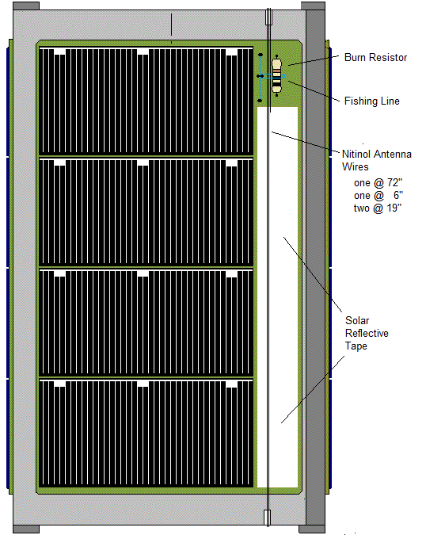
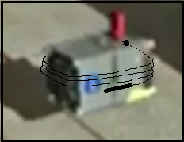
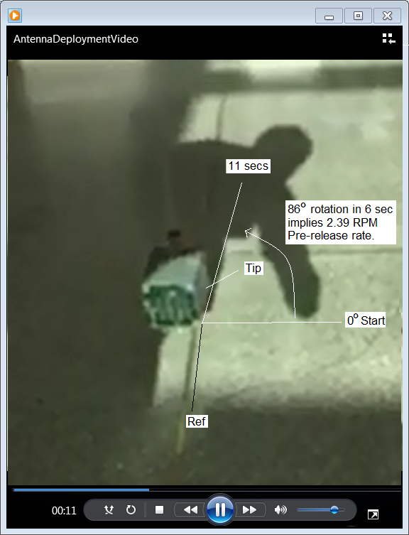
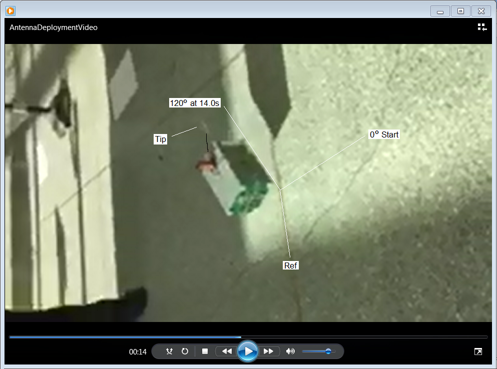
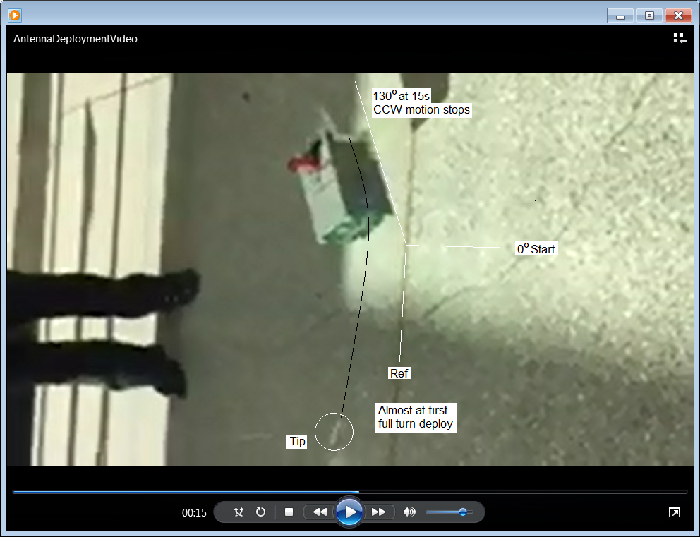
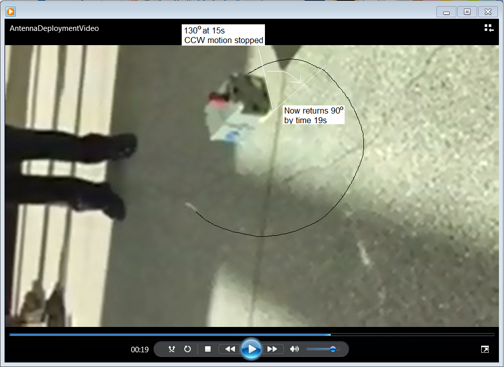
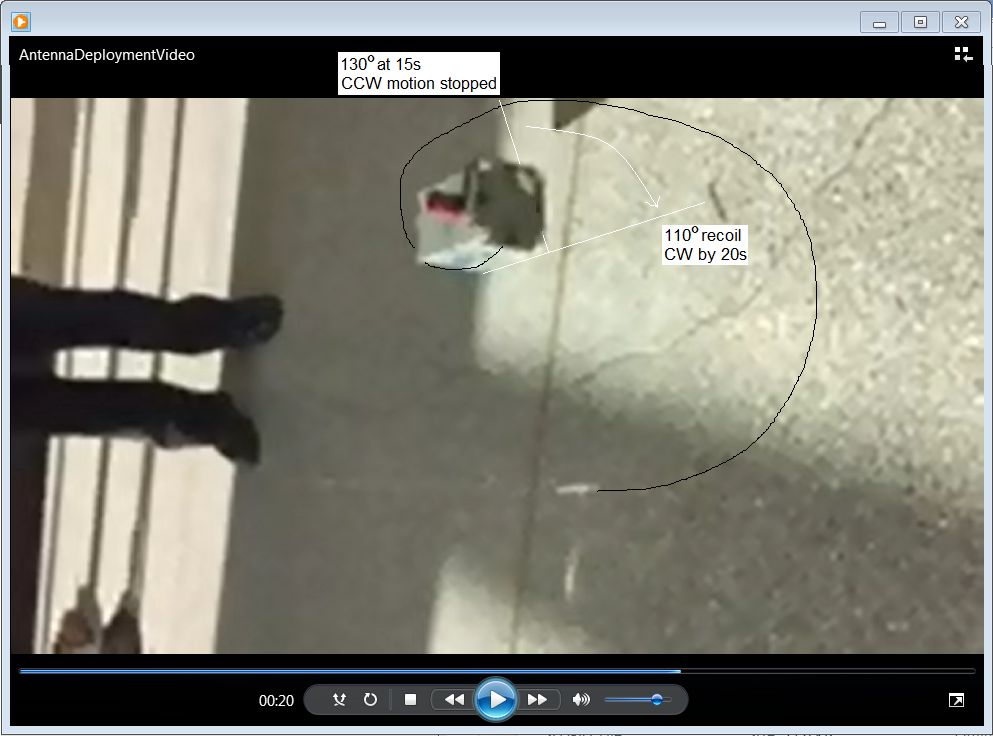
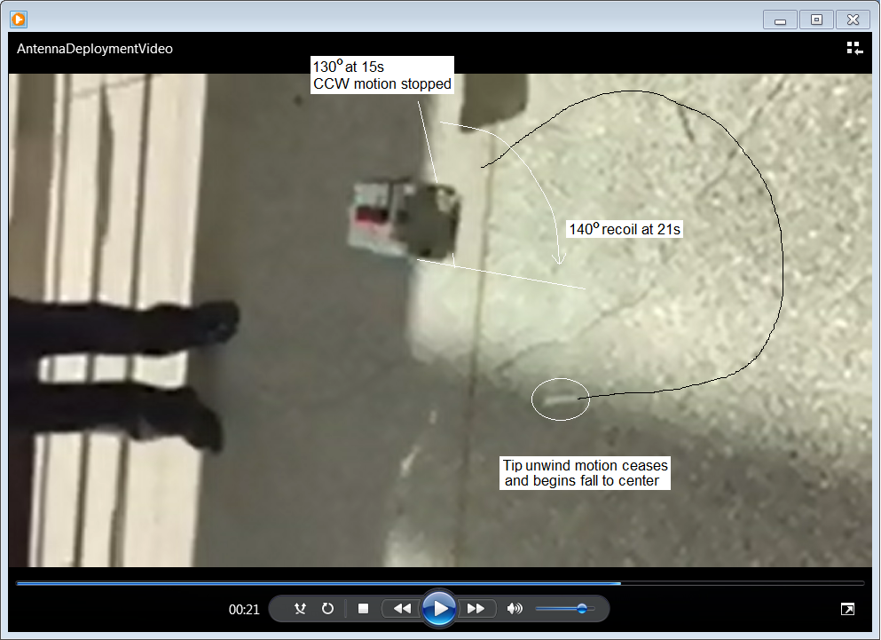

HFsat Antenna Deploy Test Feb 2017
Bob Bruninga, WB4APR, Instructor, US Naval Academy (last name at usna dot edu)
Midshipmen students: Randell, Scheiner, Cho, Mische, Giornelli (class of 2017)

 HFsat Antenna Configuration: HFSAT must deploy a pair of 8 foot long wire whips with 10g tip masses. The pre-deploy state is with the antenna wires wrapped around the spaceframe about 3.3 turns as shown at left. A drawing of a representation of the wrapping and the burn resistor is shown at the right. Further to the right is a sketch of how the two halves of the dipole should look deployed.
HFsat Antenna Deploy Test: Unfortunately due to the need to support both the cubesat and the tip mass in the 1G envirnment, only one antenna and tip mass can be tested since testing both would need 3 strings with two of them going in opposite directions. This test was conducted hanging on an XX foot long string with the antenna tip mass similarly suspended from a second similar string. The cubesat was suspended with 20 lb-test line to minimize stretch and the antenna tip mass was suspended with 4 lb-test line for minimum drag.
Deployment Video: The snapshot images below were taken from a cellphone Quicktime video of the test.
The above image is at 5 seconds after the student has attached the 9v battery, released the satellite and unfortunately imparted a slight CCW rotation rate.

At 11 seconds or 6 seconds after start, it appears above, that this rate is about 2.39 RPM as it has rotated about 86 degrees in 6 seconds.

At about 14.0 seconds (above) the release has just begun with the tip mass only about 4 incehes from the spacefram with about 90 degrees of deployment. The burn resistor side is on theshadowed right side of the cubesat.

By time 15 seconds (above) the tip mass has completed probably about 250 degrees ofdeployment and the counter-torque of this motion has stopped the original rate of the cubesat.

By 19 seconds elapsed time above, the tip mass has deployed about 360 degrees around the cubesat center of mass and the cubesat has recoiled about 90 degrees from where it had stopped.

By 20 seconds elapsed time above, the tip mass has deployed about 390 degrees while the cubesat has recoiled about 110 degrees from where it had stopped.

By 21 seconds (above) the fullest extent possible of the antenna deployment has been reached where the return-to-vertical tension in the support string of the tip mass and the drag of the wire on the floor has equaled the centrifugal force of the unwinding antenna wire and all motion stops. Video beyond this point collapses the swing of the tip mass back onto the spacecraft.